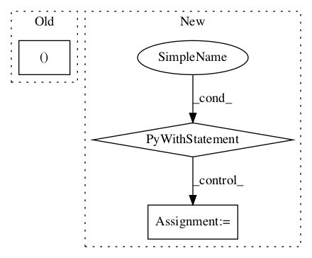

4ef810643f162aebb1d9efd153a82e0dc9e9094e,garage/tf/policies/gaussian_mlp_policy.py,GaussianMLPPolicy,dist_info_sym,#GaussianMLPPolicy#Any#Any#Any#,180

Before Change
state_info_vars=None,
name="dist_info_sym"):
with enclosing_scope(self.name, name):
mean_var, std_param_var = L.get_output(
[self._l_mean, self._l_std_param], obs_var)
if self.min_std_param is not None:
std_param_var = tf.maximum(std_param_var, self.min_std_param)
After Change
with tf.name_scope(name, "dist_info_sym", [obs_var]):
with tf.name_scope(self._mean_network_name, values=[obs_var]):
mean_var = L.get_output(self._l_mean, obs_var)
with tf.name_scope(self._std_network_name, values=[obs_var]):
std_param_var = L.get_output(self._l_std_param, obs_var)
if self.min_std_param is not None:
std_param_var = tf.maximum(std_param_var, self.min_std_param)
if self.std_parametrization == "exp":
log_std_var = std_param_var
In pattern: SUPERPATTERN
Frequency: 4
Non-data size: 3
Instances
Project Name: rlworkgroup/garage
Commit Name: 4ef810643f162aebb1d9efd153a82e0dc9e9094e
Time:
Author: null
File Name: garage/tf/policies/gaussian_mlp_policy.py
Class Name: GaussianMLPPolicy
Method Name: dist_info_sym
Project Name: tensorflow/transform
Commit Name: 54e07bdb2ba299fd6f364289510612f2fe6af8ff
Time:
Author: null
File Name: tensorflow_transform/analyzers.py
Class Name:
Method Name: _quantiles_per_key
Project Name: tensorlayer/tensorlayer
Commit Name: 641a28fbf0daff0ad1ad0f43d2c4b545cb6f9656
Time:
Author: null
File Name: examples/reinforcement_learning/tutorial_cartpole_ac.py
Class Name: Actor
Method Name: learn
Project Name: tensorlayer/tensorlayer
Commit Name: 641a28fbf0daff0ad1ad0f43d2c4b545cb6f9656
Time:
Author: null
File Name: examples/reinforcement_learning/tutorial_cartpole_ac.py
Class Name: Critic
Method Name: learn